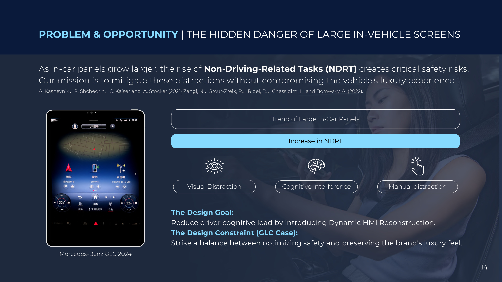
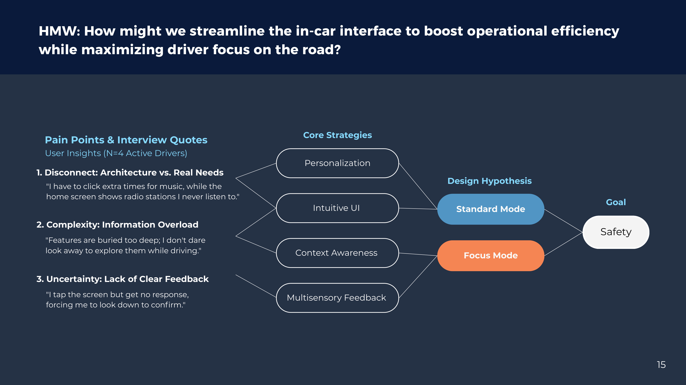
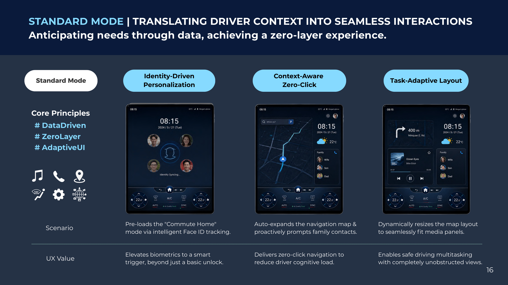
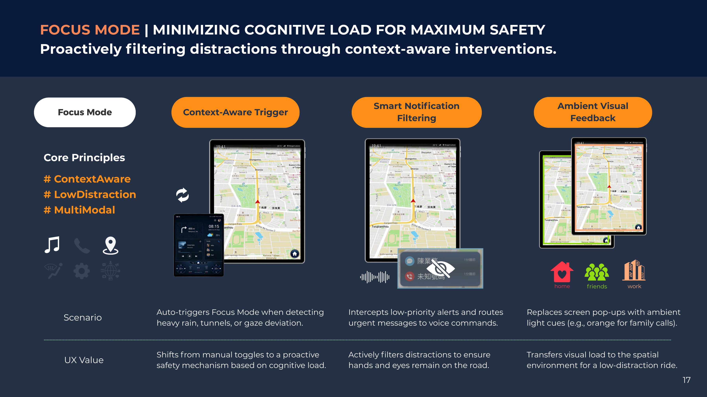
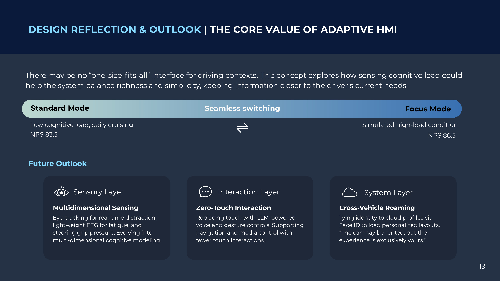

← All work

02 — SafeDrive Focus
An interface that reads your cognitive load.
A conceptual HMI redesign for premium in-vehicle systems (Mercedes-Benz GLC context) that adaptively balances information richness against driver focus.
A conceptual HMI redesign for premium in-vehicle systems (Mercedes-Benz GLC context) that adaptively balances information richness against driver focus.

As in-car panels grow larger, so do Non-Driving-Related Tasks (NDRT) — and with them, visual, cognitive and manual distraction.
The design challenge was twofold: reduce driver cognitive load through dynamic HMI reconstruction, while preserving the brand's premium feel. Safety and luxury, not safety or luxury.

Interviews with 4 active drivers surfaced three recurring pains — and they said it better than we could:
These mapped to two complementary strategies — a rich, anticipatory Standard Mode and a stripped-back, protective Focus Mode — that the system can switch between.
When load is low, the car anticipates rather than waits:


Under high load, the system intervenes before risk occurs:
Using a gamified dual-task test (HMI operation + a continuous attention game to simulate driving load, N=10 per condition), the same interface scored very differently by context:
The takeaway: rich UI felt thoughtful when relaxed but became noise under stress — adaptive switching is what serves safety-critical interaction.
